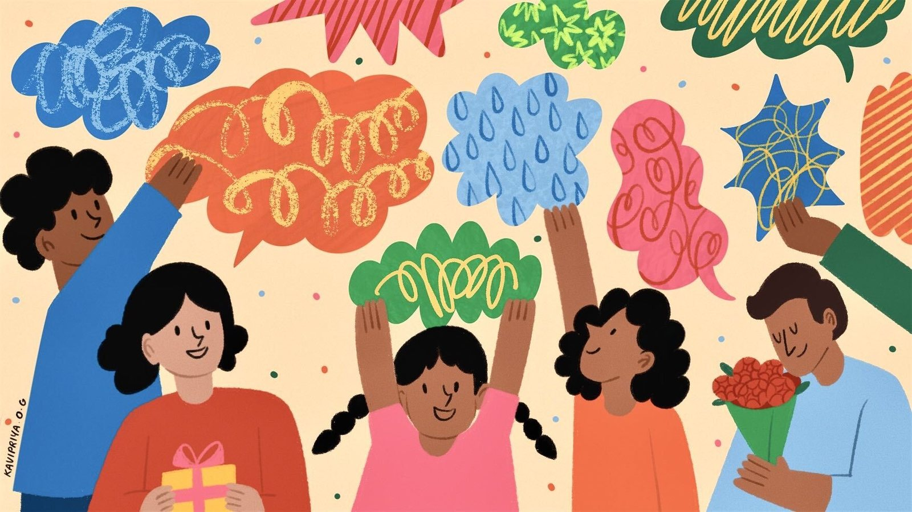

We’ve been asking our readers about gifts for three years. Their perceptive and honest answers form everything in this guide. There’s a reason people say, “it’s the thought that counts.”
by Rohin Dharmakumar